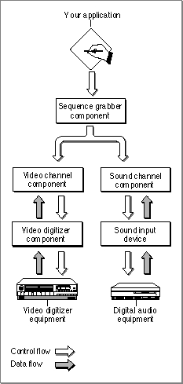

About Sequence Grabber Components
Sequence grabber components allow applications to obtain digitized data from sources that are external to a Macintosh computer. For example, you can use a sequence grabber component to record video data from a video digitizer. Your application can then request that the sequence grabber store the captured video data in a QuickTime movie. In this manner, you can acquire movie data from various sources that can augment the movie data you create by other means, such as computer animation. You can also use sequence grabber components to obtain and display data from external sources, without saving the captured data in a movie.The sequence grabber component provided by Apple allows applications to capture both audio and video data easily, without concern for the details of how the data is acquired. When capturing video data, this sequence grabber uses a video digitizer component to supply the digitized video images (see the chapter "Video Digitizer Components" in this book for more information about video digitizer components). When working with audio data, Apple's sequence grabber component retrieves its sound data from a sound input device (see Inside Macintosh: More Macintosh Toolbox for more information about sound input devices).
Sequence grabber components use sequence grabber channel components (or, simply, channel components) to obtain data from the audio- or video-digitizing equipment. These components isolate the sequence grabber from the details of working with the various types of data that can be collected. The features that a sequence grabber component supplies are dependent on the services provided by sequence grabber channel components. The channel components, in turn, may use other components to interact with the digitizing equipment. For example, the video channel component supplied by Apple uses a video digitizer component. Figure 5-1 shows the relationship between these components and your application.
Figure 5-1 Relationships among your application, a sequence grabber component, and channel components

Sequence grabber panel components augment the capabilities of sequence grabber components and sequence grabber channel components by allowing sequence grabbers to obtain configuration information from the user for a particular digitizing source. Sequence grabbers present a settings dialog box to the user whenever an application calls the
SGSettingsDialogfunction (see "Working With Sequence Grabber Settings" beginning on page 5-45 for more information about this sequence grabber function). Applications never call sequence grabber panel components directly; application developers use panel components only by calling the sequence grabber component. See the chapter "Sequence Grabber Panel Components" in this book for more information about the sequence grabber configuration dialog box and the relationships of sequence grabbers, sequence grabber channels, and sequence grabber panels.If you are developing digitizing equipment and you want to allow applications to use the services of your equipment with a sequence grabber component, you should create an appropriate video digitizer component or sound input device driver. See the chapter "Video Digitizer Components" later in this book for a description of video digitizer components. See Inside Macintosh: More Macintosh Toolbox for information about sound input device drivers.
If you are developing equipment that provides a new type of data to QuickTime, you should develop a new sequence grabber channel component. See the chapter "Sequence Grabber Channel Components" in this book for a complete description of sequence grabber channel components.